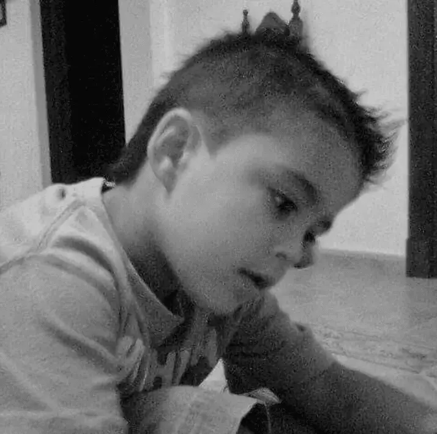
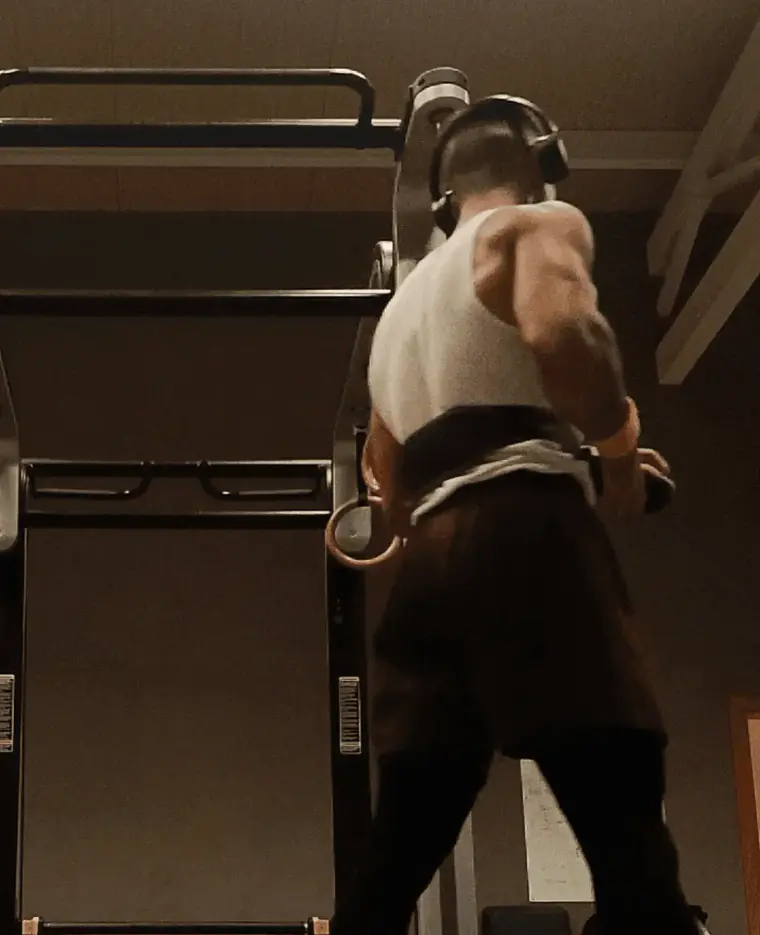
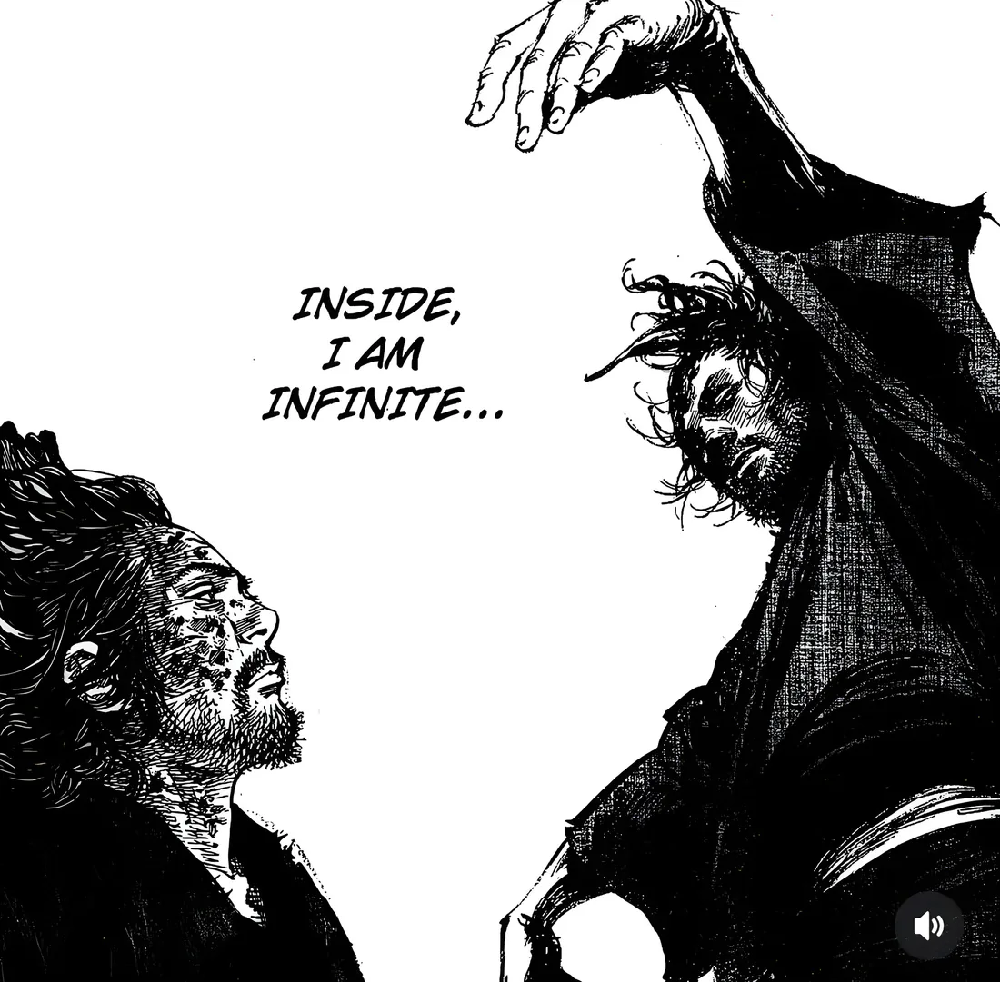

Proyectos / 03 — FILOSOFÍA
Mi vida

La vida. Nuestro proyecto único.
¿Es esta una buena vida? Y qué importa, es la que tenemos. Hasta el final de nuestros días.
Nacemos y morimos, y en medio, siempre un fiel compañero — nosotros mismos.
Eres la persona que siempre ha estado contigo, y siempre lo hará. Desde que nacemos, con falta de consciencia — hasta que morimos, aunque la mente no se mantenga cuerda.
La vida es un privilegio que siempre está ahí, pero debemos aprovechar. Somos dueños de nuestra propia vida — hay personas que ganan el privilegio de acompañarnos en ella, y nosotros el honor de que lo hagan — pero sigue siendo nuestra.
— qué menos que tener una buena relación con uno mismo.

Los estoicos definían la felicidad como virtud — y cuánta verdad que con virtud todo es más sencillo — "toma las riendas de lo controlable, acepta lo incontrolable" — cuánta fortaleza implica.
Felicidad, tesoro entre tesoros. En mi opinión, estado semipermanente — virtuoso — ataraxia — "Imperturbabilidad Mental". Y cuánta paz puede uno disfrutar siendo consciente de su propia persona. Cuán genuinos podríamos ser y actuar.
A lo largo de mi vida, es algo que he podido anhelar, que decidí buscar. Un fin para muchos, un proceso para mí. Un día, a raíz de una excusa — y benditas las excusas: pequeñas chispas que pueden encender la llama del cambio — decidí conocerme, lanzarme a mis inseguridades, y entre luchas, lograr aceptarme hasta respetarme, seguir mejorando, hasta el punto de merecer el privilegio de quererme.
Y qué bonita — dueña de mi reino — mi cielo en tierra. Cuántas razones para vivir.
Un haz de luz en un paseo.
Presenciar la dulzura de un abuelo y la inocencia de una nieta.
Esa nube en un día lluvioso.
Cualquier estúpida interacción.
Pensar y reflexionar — Y viva la introspección.
Quien no se conoce está destinado a vivir perdido. Qué triste vivir una vida sin protagonismo.

01/02 
02/02